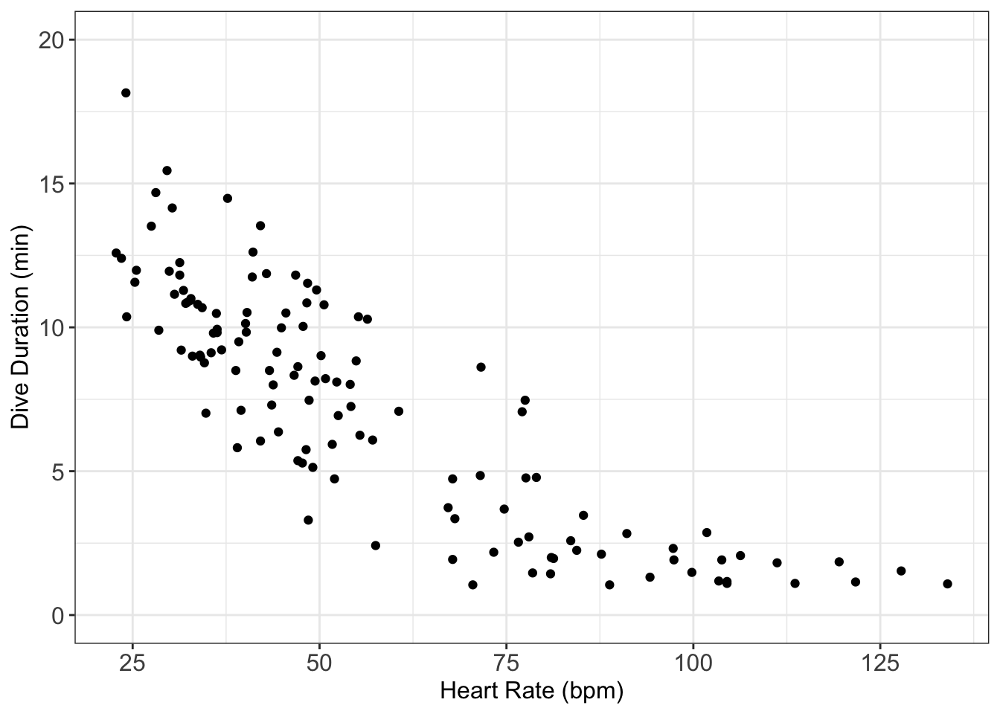
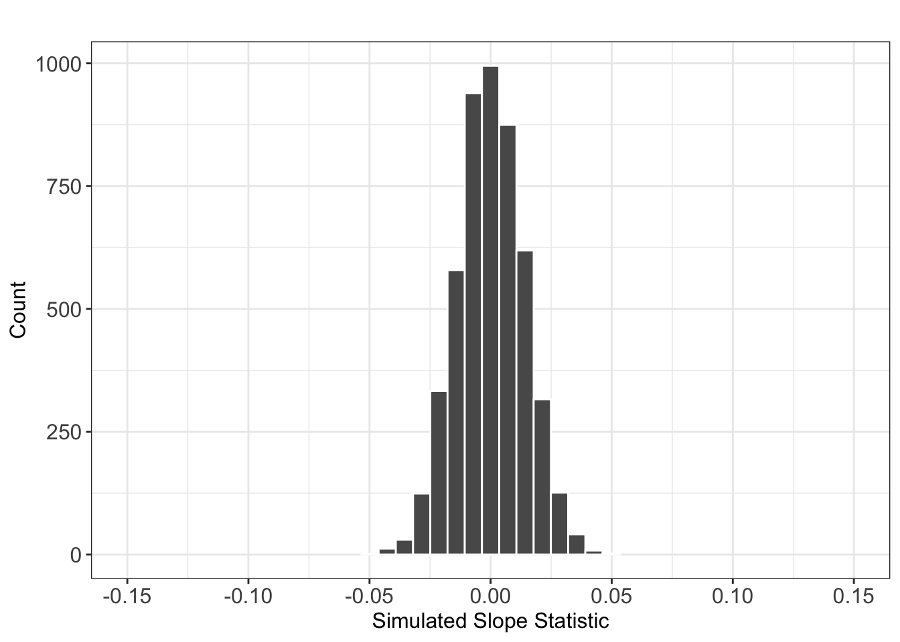

Activity 4: Diving Penguins
Terminology review
In today’s activity, we will use simulation-based methods for conducting a hypothesis test for a linear regression slope or correlation. Some terms covered in this activity are:
- Correlation
- Slope
- Regression line
Diving Penguins
Emperor penguins are the most accomplished divers among birds, making routine dives of 5–12 minutes, with the longest recorded dive over 27 minutes. These birds can also dive to depths of over 500 meters! Since air-breathing animals like penguins must hold their breath while submerged, the duration of any given dive depends on how much oxygen is in the bird’s body at the beginning of the dive, how quickly that oxygen gets used, and the lowest level of oxygen the bird can tolerate. The rate of oxygen depletion is primarily determined by the penguin’s heart rate. Consequently, studies of heart rates during dives can help us understand how these animals regulate their oxygen consumption in order to make such impressive dives.
In this study, the researchers equipped emperor penguins with devices that record their heart rates during dives. The data set reports Dive Heart Rate (beats per minute), the Duration (minutes) of dives, and other related variables. Is there an association between dive heart rate and the duration of the dive?
Vocabulary review
1. In this study, which variable will be on the \(x\)-axis? Is it the response variable or the explanatory variable? Is it quantitative or categorical?
2. Which variable is on the \(y\)-axis? Is it the response variable or the explanatory variable? Is it quantitative or categorical?
3. How is this study different from other studies we have considered? (Hint: consider the number and types of variables.)
Exploratory Data Analysis
Visualizing the Relationship - Scatterplot
A scatterplot is a graph showing a dot for each observational unit, where the location of the dot indicates the values of the observational unit for both the explanatory and response variables. Typically, the explanatory variable is placed on the \(x\)-axis and the response variable is placed on the \(y\)-axis.
When describing a relationship or association between two quantitative variables as seen through a scatterplot, we look for four aspects of association: form, direction, strength, and unusual observations.
The form of association between two quantitative variables is described by indicating whether a line would do a reasonable job summarizing the overall pattern in the data or if a curve would be better. It is important to note that, especially when the sample size is small, you don’t want to let one or two points on the scatterplot change your interpretation of whether or not the form of association is linear. In general, assume that the form is linear unless there is compelling (strong) evidence in the scatterplot that the form is not linear.
The direction of association between two quantitative variables is either positive or negative, depending on whether or not the response variable (
Duration) tends to increase (positive association) or decrease (negative association) as the explanatory variable (Dive_HeartRate) increases.In describing the strength of association revealed in a scatterplot, we see how closely the points follow a straight line or curve. If all the points fall pretty close to this straight line or curve, we say the association is strong. Weak associations will show little pattern in the scatterplot, and moderate associations will be somewhere in the middle.
When exploring the relationship and describing a scatterplot which visualizes two quantitative variables, we look for unusual observations or apparent outliers. Points which fall far from the trend of other points have the potential to be high leverage or high influential points.
4. Describe the association between the variables as revealed in the scatterplot above. (Hint: Remember to comment on direction, strength, and form of association as well as unusual observations. Also, make sure you use the context of the study)
Summarizing the Relationship - Correlation
Describing the direction, form, and strength of association based on a scatterplot, along with investigating unusual observations, is an important first step in summarizing the relationship between two quantitative variables. Another approach is to use a summary statistic. One of the statistics most commonly used for this purpose is the correlation coefficient. When the relationship has a roughly linear form, it’s strength and direction can be quantified by the correlation.
The sample correlation coefficient, denoted \(r\), is a single number that takes a value between -1 and 1, inclusive. Negative values of \(r\) indicate a negative association, whereas positive values of \(r\) indicate a positive association. It is important to note that the correlation coefficient within a population is denoted \(\rho\) and \(r\) is an estimate of \(\rho\).
Some key ideas to remember
- Correlation measures the relationship between a pair of variables; the correlation is the same regardless of which one is explanatory and which is response. (Be careful, the same is not true for regression coefficients!)
- Correlation is a number without units. It is not a percent!
- The stronger the linear association is between the two variables, the closer the value of the correlation coefficient will be to either -1 or 1, whereas weaker linear associations will have correlation coefficient values closer to 0. Moderate linear associations will typically have correlation coefficients in the range of 0.3 to 0.7, or -0.3 to -0.7.
- Correlation can be sensitive to outliers and extreme values of either variable.
Calculating the Correlation
The correlation coefficient uses a rather complex formula that is rarely computed by hand; instead, people almost always use a calculator or computer to calculate the value of the correlation coefficient. We will use the moderndive R package to obtain the correlation between two numerical variables. Specifically, we will use the get_correlation() function to obtain our sample correlation coefficient.
The code will always look something like this:
get_correlation(data = <NAME OF DATASET>,
<Y-VARIABLE> ~ <X-VARIABLE>)You will be responsible for (1) filling in the name of the data set and (2) filling in the names of the \(x\)-variable and \(y\)-variable.
I’ve filled in the code for you to obtain our sample correlation
get_correlation(data = diving,
Duration ~ Dive_HeartRate)# A tibble: 1 × 1
cor
<dbl>
1 -0.8465. Interpret the correlation obtained. Is it positive or negative? What does this imply about the relationship between the variables? Is it strong, moderate, or weak? How does this connect to what you saw in the scatterplot?
6. Say you had another observation at (100, 15), as in a penguin with a heart rate of 100 beats per minute who dove for 15 minutes. How do you think this would change the correlation coefficient?
Least Squares Regression
7. If you knew the heart rate of a penguin, what might be a way to determine how long you would expect for them to dive for based on the data?
Correlation measures strength of the association between two quantitative variables when the sample data points tend to follow a straight line. A natural question is then: what line do the points tend to follow?
8. Based on the scatterplot, would you say that a straight line could summarize the relationship between dive duration and heart rate reasonably well?
9. Using the scatterplot below, draw the line you believe fits the data the best. How did you decide where to draw your line? Is your line the same as your group members?
Finding the “Best” Regression Line
Your regression line will be different from my regression line and from other people in our class. There may be similarities, but no one will draw the exact same line! So, how then do we decide what line is the “best”?
In statistics we use a method called “least squares.” The idea is that we minimize the sum of the squared distances between each point and the line. That’s a mouthful! Let’s visualize what this means.
10. On your plot, draw the vertical distance between some (not all!) of the points and the line you drew.
These vertical distances are how far off your estimated duration is from what was actually seen in the data. These values are called residuals. The least squares method finds the line that minimizes the square of these residuals.
11. When you square small residuals what happens? Hint: What happens if you square positive number? A negative number?
12. When you square large residuals what happens?
13. When you square a number between 0 and 1 what happens?
Obtaining Coefficient Estimates from R
We will always use R to find the equation of the “best” regression line. Specifically, we will use the lm() function. The lm stands for linear model - the method we believe best models the relationship between our two variables.
The code will always look something like:
name_of_lm <- lm(<Y-VARIABLE> ~ <X-VARIABLE>,
data = <NAME OF DATASET>)In the context of these data, here is the code I used to find the regression line:
Note: We named our linear regression model diving_lm.
diving_lm <- lm(Duration ~ Dive_HeartRate,
data = diving)Once we’ve told R to find the regression line, we need to obtain the estimated coefficients that go with the line! To do this, we will use the get_regression_table() function from the moderndive package.
Note: We can use this function on the linear regression model we named above.
get_regression_table(diving_lm)# A tibble: 2 × 7
term estimate std_error statistic p_value lower_ci upper_ci
<chr> <dbl> <dbl> <dbl> <dbl> <dbl> <dbl>
1 intercept 14.8 0.466 31.6 0 13.8 15.7
2 Dive_HeartRate -0.131 0.007 -17.6 0 -0.146 -0.11614. Using the output from the R code above, write the equation of the regression line. Note that we’ve used variable names in the equation, not generic \(x\) and \(y\). And put a carat (“hat”) over the \(y\)-variable name to emphasize that the line gives predicted values of the \(y\) (response) variable.
\[\widehat{\text{Dive Duration}} = \underline{\hspace{3cm}} + \underline{\hspace{3cm}} \times \text{(Heart Rate)}\]
Notation: The equation of the best fit line is written as \(\hat{y} = b_0 + b_1 \times \text{(x)}\) where
- \(b_0\) is the intercept
- \(b_1\) is the slope
- \(x\) is a value of the explanatory variable
- \(\hat{y}\) is the predicted value for the response variable
15. Is the slope positive or negative? Explain how the sign of the slope tells you about whether your data display a positive or a negative association.
Interpreting the Coefficients
Let’s investigate what the slope means in the context of heart rate and dive duration.
16. Use the least squares regression line to predict the diving duration for penguins with a heart rate of 75 beats per minute.
17. Use the least squares regression line to predict the diving duration for penguins with a heart rate of 76 beats per minute.
18. By how much do your predictions in #8 and #9 differ? Does this number look familiar? Explain.
19. These questions above were designed to help you interpret the slope. Interpret the slope in context:
The slope of the regression line predicting dive duration based on heart rate is , meaning that for every beat per minute increase in heart rate, the predicted dive duration (increases / decreases) by minutes.
Let’s investigate the meaning of the \(y\)-intercept in the context of dive duration and heart rate.
19. Use the least squares regression line to predict the diving duration for a penguin with a heart rate of 0 beats per minute.
20. Your answer to #12 should look familiar. What is this value?
Be cautious!
While we can make predictions using our least squares regression line, we should always be wary of extrapolation in interpreting the intercept or other values outside the original data range.

21. What was the lowest value of heart rate observed in these data?
22. What heart rates do you believe would be an extrapolation?
Coefficient of Determination
A quantity related to the correlation coefficient (r) is called the coefficient of determination or R-squared (\(R^2\)). The coefficient of determination (\(R^2\)) is the percentage of total observed variation in the response variable that is accounted for by changes (variability) in the explanatory variable.
Keep in mind that \(R^2\), like correlation, requires that the relationship between the explanatory and response variables is linear!
\(R^2\) values are reported as proportions, but can also be thought of as a percent. Values close to 1 or 100% indicate that the explanatory variable is able to explain a large portion of the variability in the response.
We calculate \(R^2\) by squaring the correlation (r).
23. Calculate the coefficient of determination (\(R^2\)) for the relationship between heart rate and dive duration. Hint: Look back at question 5.
24. Complete the following statement to interpret what this value means in the context of the data:
The coefficient of determination is %, this means that % of the variation in penguin’s is attributable to changes in their .
Recall the Context of Today’s Exploration
Let’s remember what the purpose of this study was. For the penguin study, researchers equipped emperor penguins with devices that record their heart rates during dives. The data we analyzed contained Dive Heart Rate (beats per minute), the Duration (minutes) of dives, and other related variables. These researchers were interested in studying if there was evidence of an association between a penguin’s dive heart rate and the duration of their dive?
25. Write out the null and alternative hypothesis in words.
26. Using the research question, rewrite the hypotheses using notation. Use the slope as the summary measure. Hint: What is the symbol for the population slope?
Inference for the Slope Coefficient
27. Based on the slope coefficient you reported in question 14, do you think there is convincing evidence of an association between a penguin’s heart rate and the duration of their dive?
Hypothesis Testing
In a hypothesis test we are interested in comparing two things:
- what we observed in our data (our observed slope)
- what would have happened if the null hypothesis was true
In order to compare what we saw in this study to what would have happened if the null hypothesis was true, we need to generate a distribution of slopes that we would have expected to see if the null was true. This is called our null distribution. We then see where our observed slope falls on that distribution.
If our observed statistic falls in the middle of the distribution, then it is fairly likely to happen if the null is true. However, if our observed statistic falls in the tails of the distribution, then it is unlikely to happen if the null is true.
Simulation-Based Methods
Similar to what we talked about with confidence intervals and bootstrapping, a null distribution is also a sampling distribution. It is, however, a special type of sampling distribution. It is a distribution of sample statistics that could have been observed if the null hypothesis was true.
Much like we used a bootstrap or a \(t\)-distribution to approximate the true sampling distribution, there are two ways to approximate the true null distribution:
using simulation or
using a \(t\)-distribution.
In this activity we will focus on option 1, but in the lab we will focus on option 2.
Simulating what could have happened under the null hypothesis
Let’s start by thinking about how one simulation would be created on the null distribution using cards.
- Step 1: Write each penguin’s heart rate and dive duration on 125 cards - (\(x\),\(y\)) pairs.
- Step 2: Assume the null hypothesis is true - rip apart the pairs and make a pile of heart rate values and a pile of dive duration values.
- Step 3: Generate a new sample - match a randomly drawn heart rate with a randomly drawn dive duration until all cards have a random match (this is called permuting).
- Step 4: Calculate the statistic of interest - calculate the slope from the linear regression line fit on the randomly matched pairs of heart rate and dive duration.
- Step 5: Repeat and plot the statistic of interest from each random permutation on a dot-plot to create your null distribution.
How do we do this in R?
We will use the infer package to help us simulate what could have happened if the null was true. The layout for the code looks similar to what you saw in last week’s activity, so let’s try and fill in what is missing.
diving %>%
specify(response = ___________,
explanatory = ___________) %>%
hypothesise(null = "independence") %>%
generate(reps = ___________,
type = ___________) %>%
calculate(stat = " ___________")28. What inputs should be entered for each of the following to create the simulation to test regression slope?
- Response variable (choose
DurationorDive_HeartRate):
- Explanatory variable (choose
DurationorDive_HeartRate):
- Number of repetitions:
- Type of method to use when generating new samples (choose
"permute"or"bootstrap"):
- Summary measure (choose
"slope"or"correlation"):
29. Suppose we wanted to complete the simulation test using correlation as the summary measure, instead of slope. Which input(s) in #4 would need to be changed to test for correlation? What input(s) should you use instead?
Here is a preview of what the output of this code looks like for 5000 permutations:
Note: We name the values in our null distribution (plotted in the next histogram), null_dist
head(null_dist) %>% knitr::kable(digits = 3)| replicate | stat |
|---|---|
| 1 | -0.003 |
| 2 | -0.008 |
| 3 | 0.002 |
| 4 | 0.004 |
| 5 | 0.003 |
| 6 | 0.012 |
30. What does the replicate column represent?
31. What does the stat column represent?
Visualizing the Null Distribution
Below is a null distribution of slope statistics, generated using the code you completed above. I chose to use 5000 reps, which might be slightly different from what you chose.

32. Why is the distribution centered at 0?
33. Mark where the observed slope lies on the distribution.
34. Shade or circle what area you will use to calculate the p-value.
35. Estimate what p-value we will obtain from R.
Calculating the p-value
Since our distribution consists of 5000 slope statistics, we will need to use R to find our p-value. To find a p-value, R needs to first know what our observed statistic is. We can actually do this using some of the code from before!
What I’m doing in the code below is:
- making a new object named
obs_statthat contains the number for the observed slope - using the
divingdata set specifyingwhat variables to usecalclatingthe statistic we are interested in
Note: we name this value in R, obs_slope.
obs_slope <- diving %>%
specify(response = Duration,
explanatory = Dive_HeartRate) %>%
calculate(stat = "slope")
obs_slopeResponse: Duration (numeric)
Explanatory: Dive_HeartRate (numeric)
# A tibble: 1 × 1
stat
<dbl>
1 -0.131The next part is to compare this obs_stat to the distribution of shuffled slope statistics (stored in null_dist).
get_p_value(null_dist,
obs_stat = __________,
direction = "_________")36. What inputs should be entered for each of the following to calculate the p-value?
obs_stat =
direction =("greater","less", or"two-sided"):
Using your inputs, I obtained the p-value for our observed slope statistic. The p-value is:
Warning: Please be cautious in reporting a p-value of 0. This result is an
approximation based on the number of `reps` chosen in the `generate()` step. See
`?get_p_value()` for more information.# A tibble: 1 × 1
p_value
<dbl>
1 037. Why did I get a warning message from R? What does the warning tell me?
Communicate the results and answer the research question
38. Based on the p-value and an \(\alpha = 0.05\), write a conclusion in context of the problem.
39. Based on the p-value you obtained for testing the slope, what p-value do you think you would get if you tested the correlation instead? Hint: think about the relationship between slope and correlation!
Connection to Confidence Intervals
40. If you were to make a 95% confidence interval for the true slope (\(\beta_1\)), would the interval contain 0? Why or why not?
Take-home messages
To create one simulated sample on the null distribution when testing for a relationship between two quantitative variables, we separate the \(x\)-values from the \(y\)-values. We then shuffle the \(y\)-values and pair them with a new \(x\)-value. Once we have a new dataset, we find the regression line for the shuffled data and plot the slope or the correlation for the shuffled data.
To obtain a p-value for the observed slope we need to carry out the following steps:
obtain a distribution of statistics that could have happened if the null was true (null distribution)
locate the observed slope on the null distribution
count how many shuffled slopes are as large or larger than the observed slope
divide the number of slopes by the total number of reps used (e.g., \(\frac{4}{1000}\))
multiply this by two, since we almost always have a two-sided alternative
- The p-value for a test for correlation should be approximately the same as the p-value for the test of slope. In the simulation test, we just change the statistic type from slope to correlation and use the appropriate sample statistic value.